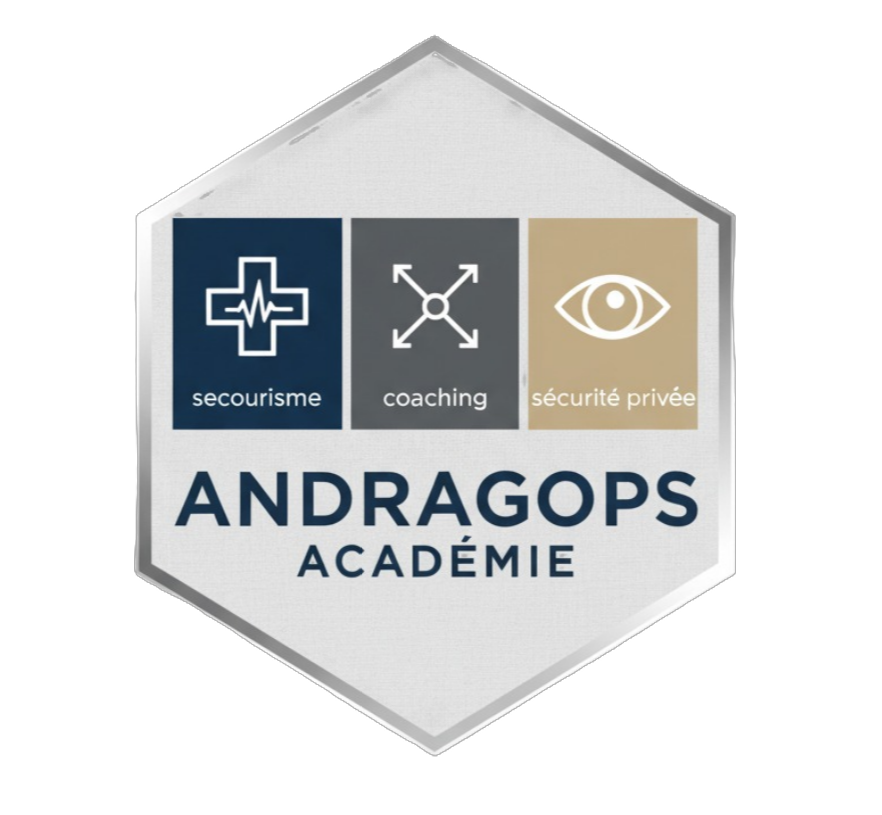

Chaque salarié est compté une fois, sur sa dernière partie. Les certificats SST « à recycler » sont déclarés par les salariés eux-mêmes : à rapprocher de vos registres.
| # | Prénom | Nom | Site | Service | SST | Score | Badge | Formations demandées | Observation | Date |
|---|---|---|---|---|---|---|---|---|---|---|
| Chargement… | ||||||||||
Comparaison sur tous les participants, quel que soit le filtre choisi en haut de page.
Plus l'aire s'étire sur un axe, plus les erreurs y sont nombreuses : c'est là que le besoin de formation est le plus fort.